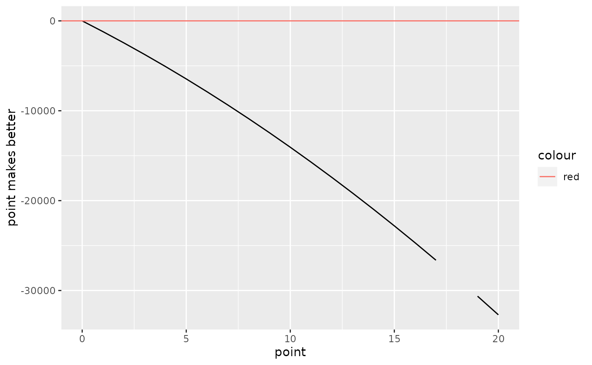

What are mortgage points?
Mortgage points are fees you pay a lender to reduce the interest rate on a mortgage. Paying for discount points is often called buying down the rate and is totally optional for the borrower.
As you search for the lender with the best offer, be careful when looking at mortgage rates advertised online. When you read the fine print, you may find that one, two — or even three or more — discount points have been factored into the rates.
Discount points are totally optional. You’ll want to find out what a lender’s rate is without adding a bunch of upfront fees.
How many mortgage points shall I buy?
When you buy one discount point, you’ll pay a fee of 1% of the mortgage amount. As a result, the lender typically cuts the interest rate by 0.25%.
But one point can reduce the rate more or less than that. There’s no set amount for how much a discount point will reduce the rate. The effect of a discount point varies by the lender, type of loan and prevailing rates, as mortgage rates fluctuate daily — so it makes sense to shop around.
Buying points doesn’t always mean paying exactly 1% of the loan amount. For example, you might be able to pay half a point, or 0.5% of the loan amount. That typically would reduce the interest rate by 0.125%. Or you might be given the option of paying one-and-a-half points or two points to cut the interest rate more.
house_value <- 125 * 1e4
down_payment_percent <- 0.2
mortgage_rate <- 4.5/100
mortage_year <- 7
saving_rate <- 0.03Option 1: no points
a1 <- repayment(house_value * (1 - down_payment_percent),
beta = mortgage_rate / 12,
m = mortage_year * 12)
a1 * (1 - 1/(1 + saving_rate/12)^(mortage_year * 12)) / (1 - 1/(1 + saving_rate/12))## [1] 1054612Option 2: with points
# number of points
x <- 4
a2_a <- house_value * (1 - down_payment_percent) * 0.01 * x
a2_b <- repayment(house_value * (1 - down_payment_percent),
beta = (mortgage_rate - 0.25/100 * x) / 12,
m = mortage_year * 12)
a2_b <- a2_b * (1 - 1/(1 + saving_rate/12)^(mortage_year * 12)) / (1 - 1/(1 + saving_rate/12))
a2_a + a2_b## [1] 1059688A more generalized form
foo <- function(x){
# no points
a1 <- repayment(house_value * (1 - down_payment_percent),
beta = mortgage_rate / 12,
m = mortage_year * 12)
ans1 <- a1 * (1 - 1/(1 + saving_rate/12)^(mortage_year * 12)) / (1 - 1/(1 + saving_rate/12))
# points
a2_a <- house_value * (1 - down_payment_percent) * 0.01 * x
a2_b <- repayment(house_value * (1 - down_payment_percent),
beta = (mortgage_rate - 0.25/100 * x) / 12,
m = mortage_year * 12)
a2_b <- a2_b * (1 - 1/(1 + saving_rate/12)^(mortage_year * 12)) / (1 - 1/(1 + saving_rate/12))
ans2 <- a2_a + a2_b
return(ans1 - ans2)
}
point_pool <- 0:20
tbl <- tibble(point = point_pool,
`point makes better` = lapply(point_pool, foo) %>% unlist())
ggplot() +
geom_line(aes(x = point, y = `point makes better`), data = tbl) +
geom_hline(aes(yintercept = 0, color = "red"))
## [1] -5.456081e-05
y$f.root## [1] -0.2130971